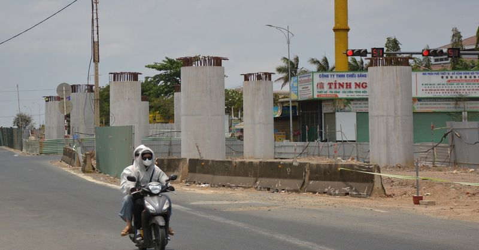
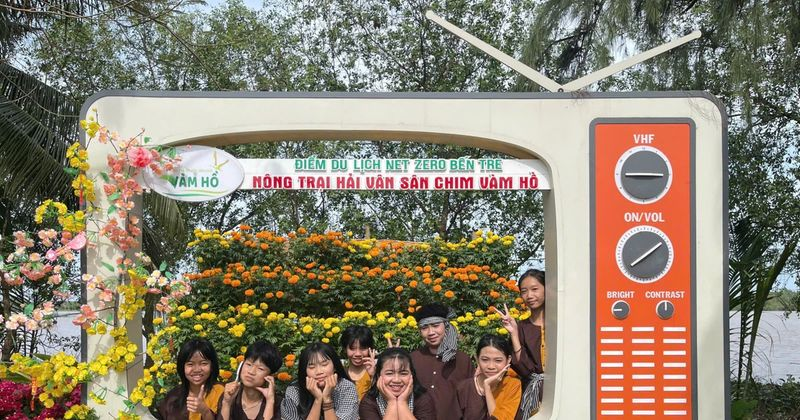
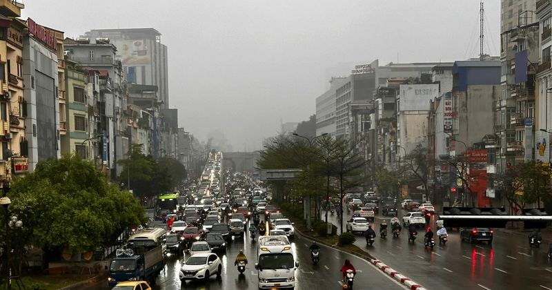

Tong hop tin tuc - 2026-04-19
Theo số liệu của Cục Hải quan vừa công bố, từ ngày 1/4-15/4, Việt Nam nhập khẩu khoảng 472 nghìn tấn xăng dầu các loại (gồm xăng, diesel, mazut, nhiên liệu bay) với kim ngạch gần 765 triệu USD. So với
Zalo Facebook Twitter Lưu bài viết Bản in Copy link Chủ tịch Ngân hàng Phát triển châu Á (ADB) Masato Kanda nhận định đồng yen có thể chịu thêm sức ép nếu thị trường cho rằng Ngân hàng trung ương Nhật
Lãnh đạo Microsoft: AI cũng sẽ phải mua bản quyền phần mềm như con người Theo Kim | 19/04/2026 17:10 PM | Công nghệ Theo dõi Cafebiz.vn trên Đề xuất này đang châm ngòi cho một cuộc tranh luận lớn về t
Zalo Facebook Twitter Lưu bài viết Bản in Copy link Đà tăng của giá lúa gạo trong nước và xuất khẩu trong tuần qua (từ 12-18/4) tiếp tục được củng cố; trong đó, giá gạo thơm 5% tấm đã tiến sát mốc 500

Mố trụ hạng mục cầu vượt quốc lộ 1 nối với nút giao Ba Bàu lên cao tốc Phan Thiết - Dầu Giây trơ trọi từ lâu giữa ngã tư đông đúc - Ảnh: ĐỨC TRONG Theo ghi nhận của Tuổi Trẻ Online , công trường làm c
Các đại biểu tham dự kỳ họp thứ nhất, Quốc hội khóa XVI - Ảnh: NGUYỄN KHÁNH Theo chương trình, sáng mai (20-4), kỳ họp thứ nhất, Quốc hội khóa XVI tiếp tục đợt họp thứ 2. Xem xét, quyết định nhiều nội
TIN MỚI Thông tin này được bộ phận báo chí của Cơ quan An ninh Ukraine (SBU) cho biết. Được biết kết quả của chiến dịch phức tạp này là các tàu đổ bộ cỡ lớn của Hải quân Nga thuộc Dự án 775 mang tên Y

Bà Nguyễn Thị Ngọc Dung - Phó Giám đốc Sở Văn hóa - Thể thao và Du lịch (VH-TT&DL) Vĩnh Long cho biết, năm 2025 đánh dấu nhiều chuyển biến tích cực của ngành du lịch, khẳng định vai trò ngày càng rõ n
Nguy cơ phát sinh nợ xấu khi cho thuê, cho mượn tài khoản Trước thực trạng gia tăng các hành vi lợi dụng tài khoản ngân hàng để gian lận và chiếm đoạt tài sản, các ngân hàng khuyến nghị khách hàng cần
Theo Page Six , Jessica Alba, 45 tuổi, và người tình kém 11 tuổi Danny Ramirez đi chơi cùng con trai cô tại Los Angeles ngày 17/4. Trong một bức ảnh do paparazzi chụp, Alba cười khi bé Hayes chín tuổi
Ngày 19/4, Công an phường Bình Hưng Hòa phối hợp cùng Phòng Cảnh sát hình sự Công an TPHCM đang củng cố hồ sơ, xử lý nghiêm vụ cố ý gây thương tích liên quan đến một tài xế xe ôm công nghệ. Đối tượng
Ngày 19/4, Công an phường Hiệp Bình (TPHCM) phối hợp các đơn vị nghiệp vụ điều tra, làm rõ nguyên nhân tài xế taxi tử vong trong ô tô trên đường Phạm Văn Đồng. Người dân hiếu kỳ vây quanh xe ô tô nơi
Ngày 19-4, Công an phường Bình Hưng Hòa (TPHCM) phối hợp Phòng Cảnh sát hình sự Công an TPHCM củng cố hồ sơ, xử lý vụ việc liên quan đến hành vi cố ý gây thương tích xảy ra sau va chạm giao thông trên
Trong bối cảnh thị trường lao động cạnh tranh, các trường đại học (ĐH), cao đẳng (CĐ) đang tăng cường đổi mới đào tạo nhằm giúp sinh viên (SV) nâng cao kỹ năng, tích lũy kinh nghiệm, từng bước đáp ứng
Hãy chọn một hành tinh thu hút bạn nhất ở trong hình để khám phá điểm mạnh lớn nhất của bạn là gì. - Hành tinh 1 Hành tinh 1 Bạn là người có khả năng thích nghi nhanh chóng với nhiều vai trò, tình huố
Kỳ thủ 15 tuổi Đầu Khương Duy lên ngôi vô địch Giải Bangkok Chess Club Open 2026 - Ảnh: Bangkokchess Bước vào ván đấu cuối cùng tại Giải Bangkok Chess Club Open 2026, kỳ thủ Đầu Khương Duy đối đầu với
TIN MỚI Bộ Nội vụ đang lấy ý kiến hồ sơ dự thảo Thông tư hướng dẫn thực hiện điều chỉnh lương hưu, trợ cấp bảo hiểm xã hội và trợ cấp hằng tháng trên Cổng Thông tin điện tử của Bộ. 2 phương án điều ch
Giải trí Nữ sinh chi 10 triệu đồng mua vé xem 30 anh trai
Zalo Facebook Twitter Lưu bài viết Bản in Copy link Làm sao để các ý tưởng khởi nghiệp không chỉ dừng lại ở hoạt động phong trào, đoạt giải và dừng lại sau các cuộc thi là vấn đề được các diễn giả tập
Zalo Facebook Twitter Lưu bài viết Bản in Copy link Từng là “rốn nghèo” của huyện vùng sâu Đam Rông trước đây, khu vực Đầm Ròn (nay là trung tâm xã Đam Rông 4, Lâm Đồng) đang vươn mình thay da đổi thị
Bạch Dương (21/3 - 19/4) Bạch Dương bước vào tuần này với cảm giác chững lại rõ rệt sau giai đoạn tăng tốc trước đó. Một kế hoạch tưởng chừng đang đi đúng hướng có thể xuất hiện điểm bất hợp lý, buộc
Trưa 19/4, Công an phường Hiệp Bình Chánh (TPHCM) phối hợp với các đơn vị nghiệp vụ liên quan điều tra vụ nam tài xế tử vong trong xe taxi đậu trên đường Phạm Văn Đồng. Hiện trường vụ việc. Ảnh: HC Th
Trung tâm Dự báo khí tượng thủy văn quốc gia ghi nhận trong ngày 19/4, tại các trạm như Yên Châu (Sơn La), Phủ Lý (Ninh Bình) và Sao Vàng (Thanh Hóa), lượng mưa đã đạt mức từ 42-60mm. Dự báo, đêm 19/4
Vartanyan khi còn thống trị ACA (Ảnh: Truyền thông ACA) Xuất thân Eduard Vartanyan sinh ngày 11-6-1991 tại Yerevan, có cha là người Armenia và mẹ là người Nga. Từ nhỏ, Eduard chuyển đến Moscow cùng gi
TIN MỚI Tính đến sáng 19/4, đã có 31 công ty chứng khoán công bố BCTC quý 1/2026. Top các công ty dẫn đầu có Chứng khoán VPBankS ghi nhận doanh thu hoạt động 3 tháng đầu năm đạt 2.871 tỷ đồng, gấp 4 l
Đại tướng Nguyễn Trọng Nghĩa (giữa) - Chủ nhiệm Tổng cục Chính trị Quân đội nhân dân Việt Nam và ông Phạm Thành Ngại - Chủ tịch UBND tỉnh Đồng Tháp tặng quà cho học sinh, thanh niên có hoàn cảnh khó k
Đội tuyển nữ Đài Bắc Trung Hoa trong trận thắng Việt Nam 1-0 tại Asian Cup 2026 Theo Yahoo, 18 tuyển thủ nữ Đài Bắc Trung Hoa cùng ký tên trong đơn kiến nghị, cho rằng ban huấn luyện hiện tại bộc lộ n
Sư Tử (23/7 - 22/8) Sư Tử bước vào tuần với một cảm giác khá rõ ràng rằng mọi thứ không còn xoay quanh mình như trước. Trong công việc, bạn có thể nhận ra ý kiến của mình không còn được ưu tiên tuyệt
Zalo Facebook Twitter Lưu bài viết Bản in Copy link Viện Kiểm sát nhân dân thành phố Hà Nội đã quyết định trả hồ sơ, yêu cầu Cơ quan Cảnh sát điều tra Công an thành phố Hà Nội điều tra bổ sung một số

Trung tâm Dự báo Khí tượng Thuỷ văn Quốc gia cho biết, khoảng ngày 23/4, một đợt không khí lạnh có cường độ trung bình sẽ tràn xuống nước ta. Do ảnh hưởng của không khí lạnh nén rãnh áp thấp nên trong
Kết quả xổ số hôm nay của xổ số miền Trung (XSMT): Khánh Hòa, Kon Tum, Huế Kết quả xổ số hôm nay của Công ty Xổ số kiến thiết Kon Tum là 901057 Công ty Xổ số kiến thiết Khánh Hòa có giải đặc biệt 4596
(PLO)- Đại diện Trung ương Giáo hội Phật giáo Việt Nam, Bộ Dân tộc và Tôn giáo, Ban Tôn giáo Chính phủ...đã đến dâng hương, kính viếng Trưởng lão Hòa thượng Thích Thanh Dục tại chùa Thánh Long. Theo B
Cặp Phan Hiển, Thu Hương thi đấu tại Philipines. Ảnh: T.S Thông tin từ Ban huấn luyện đội khiêu vũ thể thao Việt Nam cho biết, chúng ta đã giành được 6 tấm HCV qua các nội dung đã tranh tài ở ngày 18-
Từ trái sang: Võ Ngọc Quyền, Biện Thuy và NSƯT Vũ Luân trong vở "Lôi Vũ" Tối 18-4, tại Nhà hát Cải lương Trần Hữu Trang, Sân khấu Vũ Luân đã chính thức ra mắt vở cải lương kinh điển "Lôi Vũ" - bản dựn
Dù thường "lặn" mình trong sáng tạo, song mỗi lần xuất hiện, anh đều mang đến bất ngờ thú vị cho khán giả. .Phóng viên: Nhìn lại chặng đường âm nhạc, đâu là cột mốc quan trọng nhất định hình phong các
Ngày 18-4, Chương trình "Đưa trường học đến thí sinh" do Báo Người Lao Động tổ chức tại Trường THPT Sào Nam (xã Nam Phước, TP Đà Nẵng) thu hút hơn 1.700 học sinh lớp 11 và 12 trên địa bàn đến tham dự.
TAM NGUYÊN (tổng hợp)
Đêm hòa nhạc được kỳ vọng mở ra một không gian thưởng thức âm nhạc đặc biệt, khi những thanh âm tinh hoa từ kho tàng âm nhạc hàn lâm châu Âu được cảm nhận như một phần của nhịp sống tinh tế giữa lòng